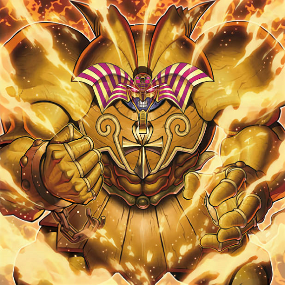
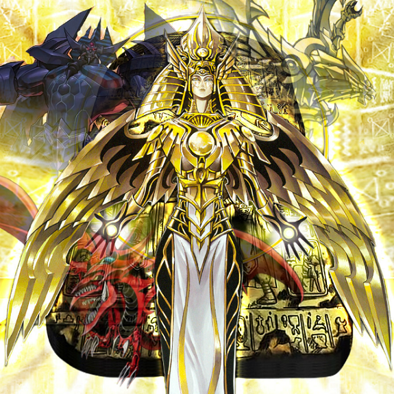
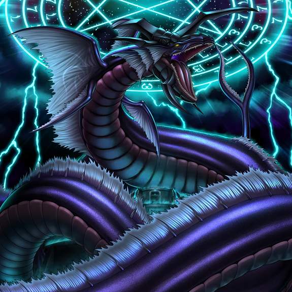
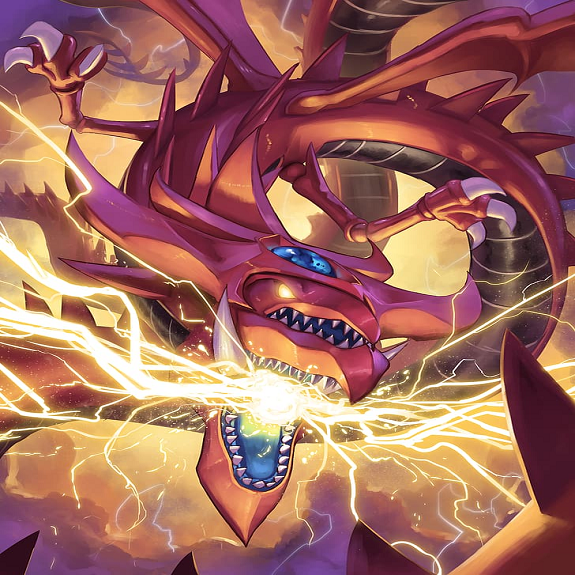
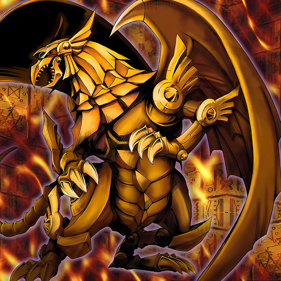
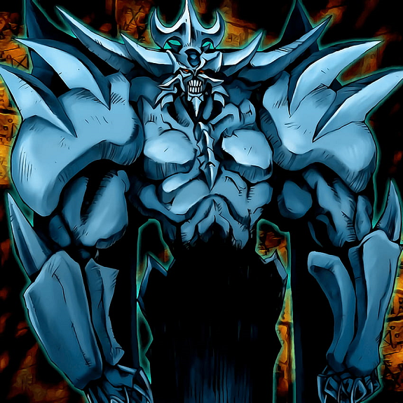
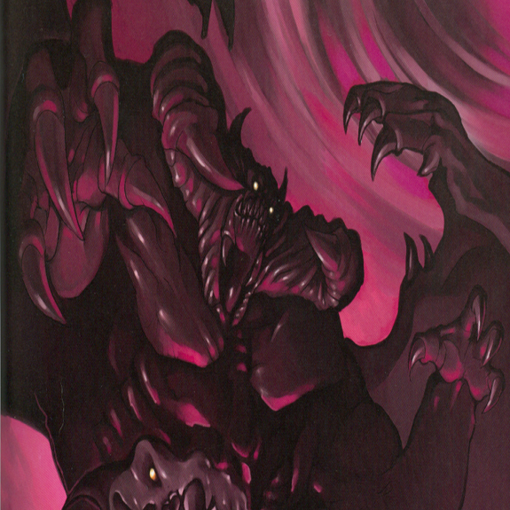

-
O Lendário Exodia Completo
Exodia, o Proibido, é uma entidade lendária representada como um guerreiro colossal, envolto em correntes douradas que selam seu poder absoluto. Com uma armadura imponente, essa carta possui um efeito único: quando suas cinco partes (cabeça, braços e pernas) são reunidas, garante ao duelista a vitória instantânea no duelo, contra Exodia completo não adianta nada, nem pontos de vida, estratégia ou armadilhas, uma vez invocado por completo é fim de jogo.
ATK/ ? DEF/ 0 -
Holactie O Criador Da Luz"
Holactie, o Criador da Luz, é uma das entidades mais gloriosas e reverenciadas do universo dos duelos. Com uma aparência majestosa, ele é frequentemente representado como uma figura radiante envolta em luz celestial, com asas imensas que se estendem como raios de sol. Sua forma é adornada com símbolos de poder e sabedoria, é dito nas histórias que ele foi ser que criou os três deuses egípcios, isso reflete sua posição como um dos deuses supremos essa carta tem apenas o atributo da vitória instantânea no duelo quando invocada assim como Exodia.
ATK/ ? DEF/ ? -
O Grande Leviatã"
O Grande Leviatã é uma criatura colossal que emerge das profundezas do oceano, simbolizando a força imensa das águas. Com um corpo serpentino e escamas brilhantes, ele é uma visão aterrorizante que infunde respeito e temor em seus adversários. Sua impressionante aparência refletem sua natureza indomável e protetora.
ATK/ ? DEF/ ? -
Slifer, O Dragão Celeste"
Um dos três deuses egípcios, Slifer O Dragão Celeste é uma das cartas mais poderosas que representa poder e majestade. Com suas escamas vermelhas vibrantes e asas majestosas, este dragão é uma figura de respeito e temor, uma entidade que transcende o tempo e o espaço, frequentemente associado à sabedoria e à justiça. Segundo as lendas, ele é o guardião do conhecimento oculto, capaz de controlar os destinos dos duelistas que se atrevem a enfrentá-lo.
ATK/ ? DEF/ ? -
O Dragão Alado de Rá"
Mais um dos deuses egípcios "E o mais forte entre eles", O Dragão Alado de Rá tem uma aparência magnífica e aterrorizante, ele se destaca por suas escamas douradas que refletem a luz do sol, criando um espetáculo visual deslumbrante. Suas enormes asas, que parecem feitas de pura luz, permitem que ele voe majestoso pelos céus, emanando uma aura de divindade e força. Como o deus do sol, o Dragão Alado de Rá é um símbolo de renascimento e força. Ele é frequentemente associado à luz e à vida, representando a proteção e a justiça. Nas lendas, ele é descrito como um guardião do equilíbrio, usando seu poder para proteger os inocentes e punir os malignos.
ATK/ ? DEF/ ? -
Obelisco O Atormentador"
Outro dos três deuses egípcios, com sua forma colossal e imponente, ele se destaca por sua aparência de um gigante esculpido em pedra, adornado com hieróglifos e símbolos místicos que refletem seu poder divino. Como uma das manifestações da divindade, Obelisco é associado à proteção e à destruição. Ele é visto como um guardião que pode tanto proteger quanto punir, refletindo a dualidade da natureza divina. Segundo nas lendas, Obelisco é descrito como um juiz implacável, que impõe a justiça sobre aqueles que cruzam seu caminho.
ATK/ 4000 DEF/ 4000 -
Zork Necrophades"
Zork, o Mestre das Trevas, é uma entidade aterrorizante que simboliza o poder do desconhecido e do caos. Com uma aparência sombria e ameaçadora, ele é envolto em uma aura de escuridão que parece consumir a luz ao seu redor. Seus olhos brilhantes, que emanam um vermelho intenso, são a única parte visível de sua forma nebulosa, transmitindo um sentimento de desespero a todos que cruzam seu caminho. Ele é muitas vezes associado a temas de destruição e desespero considerado um dos seres mais poderosos do universo, capaz de manipular as forças da escuridão para seus próprios fins. Nos mitos antigos, Zork é visto como um arauto do fim, trazendo consigo a ruína para aqueles que se atrevem a desafiá-lo.
ATK/ 5000 DEF/ 5000